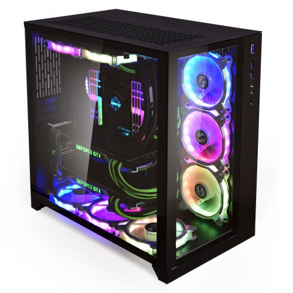

En chassie är där alla komponenter sitter. En bra chassie är en sånt som kan förkyla komponenterna och isolerar ljudet. När man vill köpa en chassie så är det bra att man vet vad man vill få av chassit. Det finns vissa som har i sina tankar att det viktigaste är designen, att det lyser i olika färger och andras tankar är att så länge så att det passa för deras komponenter så det är bra.
Corsair Obsidian 500D RGB SE är det bästa premium chassit 2020.
